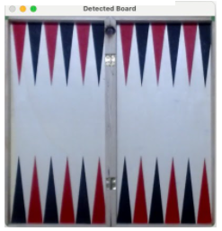

Figure 1: multiple avilable game boards
Final project by
Or,Oz
A program for playing the board game Backgammon vs. a computer opponent on a physical Backgammon board
Backgammon is one of the oldest strategy games known, dating back to 5,000 years ago.
It involves both strategy and luck, stemming from rolling two dice as part of the game.
Generally, it is a two-player game where each player has 15 checkers at a certain color (typically, black and white or black and red, but other colors exist).
The board is divided into 24 triangle-shaped cells in two alternating colors, and the checkers are moving around them based on the results of a dice roll (one roll per turn).
The objective of each player is to move all her/his 15 checkers off the board, and the first player to achieve this wins the game.
Figure 1: multiple avilable game boards
Figure 2: the image of the board we have used in this project
This section describes the use cases and the system design in a fair level of detail, and includes a few sections covering high level use cases, the system design and its modules. It will be followed by a detailed section covering the computer vision aspect, which is the major focus of the project.
The system is designed to be used as follows:
Figure 3:The program modules
The game management system that we built was based on OpenAi gym toolkit.
This toolkit includes many AI environment descriptions for various games, including Backgammon specifically.
We leveraged their Backgammon environment and extended it to fit our needs for the project.
In a nutshell, the core environment describes the game programmatically: it holds the current player, the board state, the bar state and the offbar state for each player. It has four main functions:
Reset: reset the game state into the initial state (the game starting position).
Step: this function gets the set of moves that the agent wishes to perform, and changes the environment based on those actions.
Get_valid_actions:this function provides all the available legal moves for the current player, based on the current board state and the dice roll.
Get_opponent_agent: this function ends the player’s turn and returns the move of the opposing agent.
As mentioned above, we had to extend the OpenAI system with various adaptations, such ass fixing its ability to render the game state to a window and adding the ability to single move for a better user experience.
In addition to the functionality described above, this module also interacts with all other modules, orchestrating between the GUI, the AI and the computer vision modules for creating a smooth game experience.
The GUI was built using the Tkinter library, and it is the entrance point of the game, immediately when launching the executable.
It is based on a GUI provided by OpenAi gym, with significant adaptations and modifications for our project.
The game starts by offering the user to choose the agent type for each color: the white player agent type and the black player agent type.
Then, the player needs to perform the calibration process with the empty board.
The process is smooth, with informative error messages and images if the calibration process fails.
Once the calibration is successful, the GUI presents the initial game state that the board needs to be in.
After the player prepares the initial game board he will click on the button to check that the board is set up correctly to start the game.
The first player is selected randomly, and then the game is running, turn after turn.
We print the selected player and the roll dice to the console and also render the dice roll in the UI.
If the current agent is the computer agent, then it will split the selected action to discrete, single moves.
Each such move is rendered on the screen, waiting for the player to play that move on the real board and click on button on the gui and checking that the desired state is detected by the camera.
For the human player turns, the player will make the whole move on the board and then click a “continue” button.
Then, the system will check the physical board state and verify whether its state is one of the possible states that are available from the last verified game state (taking into account the last board position and the rolled dice).
Figure 4: A snapshot of the GUI presenting the opening screen, where the player selects the agent types for each color.
The system includes 3 agents with different move selection policy:
The computer vision module has been developed from scratch by the project team. The module is responsible for the following:
A photo of the board and checkers chosen for this project can be found at figure 2 above.
The first challenge we faced was the accurate detection of the board area.
Most of the experiments we conducted were on a table which was in a color quite similar to the board color.
Initially, we have tried multiple techniques for accurately detecting the board, including using various HSV color filters, along with blurring and erosion/dilation. Unfortunately, all of our experiments failed after investing days in attempting to detect the contours of the board. As predicted, the color of the board, being not very much distinguishable from the table, was a challenge.
See figure 5, comparing the image of the board vs. the one of the best HSV filters we could apply empirically.
Figure 5: The original image acquired by the webcam (top) and the seemingly best performing HSV filter (bottom).
Note the light reflection on the table near the top right corner of the board; it made the detection of a square contour around the board virtually impossible, even after blur and/or erosion and dilation.
After consultation, we’ve figured out that adding a minor visual cue would be necessary for getting high reliability board detection.
Thus, we have attached four small green circle stamps, one in each corner of the board.
They can be observed in figure 6 below, along with how they were detected using the HSV filter:
Figure 6:Original board image along with 4 small green stamps, one at each corner of the board (top)
The same image after applying green HSV filter, erosion and dilation, for highlighting the circles.
This setup was just enough for getting the board detection right.
In order to reduce noise and highlight the green circles, we used erosion and dilation.
Then, the Hough circle transform was used to locate the circles.
However, as we’ve noticed issues in different light conditions with objects near the board
(adding some “false-positive” circles to the image occasionally),
and in order to increase the robustness, we added a very simple geometric check.
pecifically, we used the fact that the board is a square, determining the distance ratios expected between the four points,
with some factor to enable reasonable rotation of the camera.
This increased robustness was added at the expense of limiting the camera angle,
however we figured out that the more frequent use case is when the board is moved / rotated sideways on the table, which is completely unaffected by this detection method,
while camera angle is rather stable and in the vicinity of 90° as it has to capture the entire board, which is quite large.
This additional check can be enabled/disabled easily.
After detecting the board vertices, homography was performed in order to ensure that we have an identically looking image at each detection,
as if the camera was aligned directly over the board.
In order to perform it, we had to locate where each of the board vertices is compared to the image vertices (e.g. top-left, bottom-right).
This is done automatically and then homography transformation is applied, from each of the 4 green points to a 400 x 400 pixels square (Figure 7b).
Figure 7a:The expected length between points according to the square shape of the board.
Figure 7b:The detected board after homography.
As mentioned above, calibration takes place once, just before the beginning of the game, and requires an empty board.
The goal of this process is to find all relevant areas in the board where checkers can “legally” be placed, define these areas numerically on the detected board image and tag them uniquely.
We named these checkers containers. Overall, we had to tag 25 checkers containers, that include 24 triangles (12 red, 12 black) and the bar, which is the long rectangle separating both parts of the board.
(checkers removed by the opponent are being placed in the bar).
Calibration was performed on a tightly cropped board image (figure 7b).
The calibration process consists of two steps, and is performed automatically with no user intervention.
Thus, taking the aligned and cropped board image as an input, this method applies Gaussian blur for noise removal, and then applies HSV filter for the red color.
Then, all contours in the image are extracted and processed according to the following:
Figure_8: Red triangle contours as detected after following the process mentioned above on the cropped board image.
This stage is performed analytically, without the need of additional images.
It gets as input solely the red triangles contours obtained previously, and includes the following steps:
Figure 9:
The cropped board image with the checkers containers’ bounding boxes and their numbers (left) and the Backgammon board numbering (right).
Note that the left image is flipped, as the image is taken from the computer point of view, which opposes the user
(i.e. the user is in front of triangles 1-12).
Following the calibration step performed before the game begins, all that needs to be done during the game is to detect the location of various checkers on the board, and assign each to one of the checkers containers identified previously.
However, as noted above, this part also had a challenge, where the black checkers could not be distinguished when placed on a black triangle.
Thus, we had to paint the black checkers with a distinctive color (a silver marker was chosen).
Figure 10:The left image was taken using the webcam, and the board has two black pieces on it.
Are you able to locate them? Probably not. Obviously, also the computer can’t...
On the right, a black checker after recoloring.
Whenever the physical board status is inquired by the game management module
it calls the get_current_board_status method, which performs the following:
Figure 11:The original image (top) and the cropped board along with the detected checkers.
White checkers denoted in red, black denoted in green (bottom).
Make sure that all the downloadable files are included in your zip file!
List any references from the literature you have consulted or used.